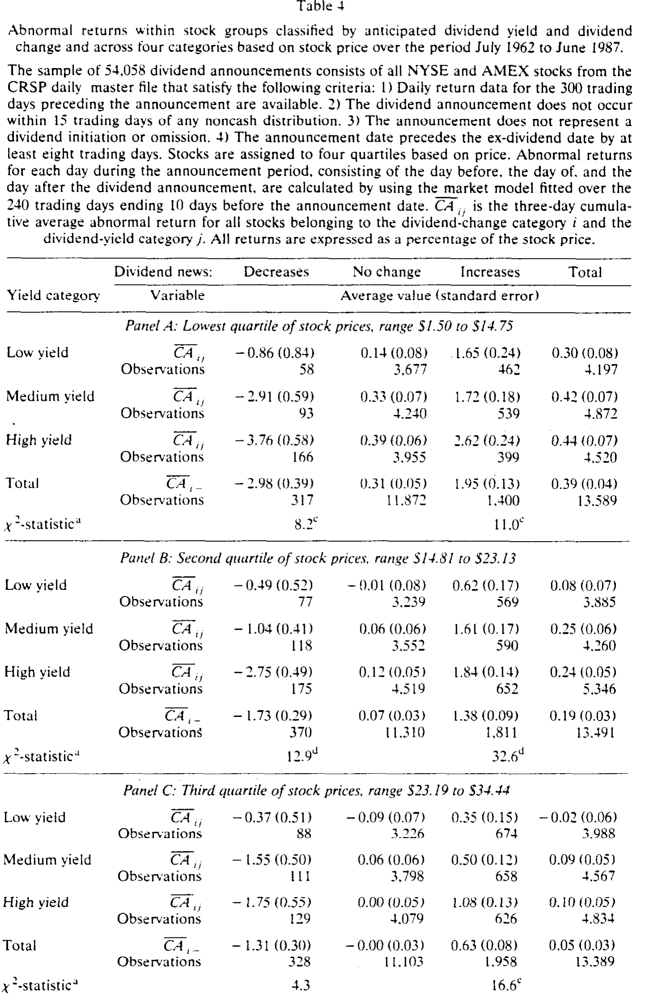
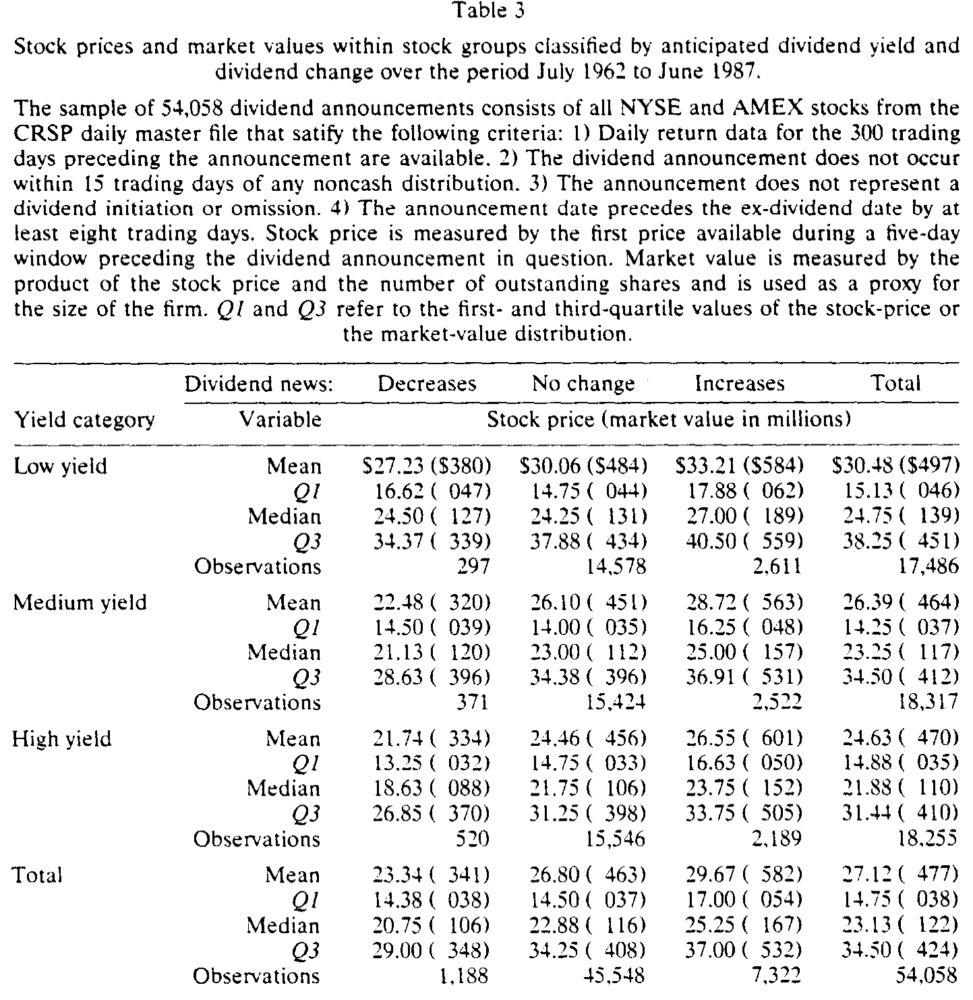
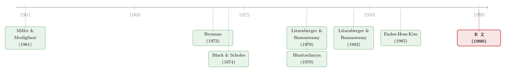

股利涨了，谁鼓掌更响？——把「信息」和「收益率」从同一则公告里拆开
本文读的是 Bajaj & Vijh (1990, Journal of Financial Economics)：股利意外与股利收益率意外是完全相关的，所以在任何一则公告里都无法把「信息效应」和「收益率效应」分开；但作者发现，如果偏好股利的投资者恰是高收益率股票的边际投资者，那么横截面上，预期收益率越高的股票，对股利增加的正向反应应当越大、对股利减少的负向反应应当越深。8,500 多个股利变动样本证实了这一点：股利增加的三日超额收益从低收益率组的 0.63% 单调升到高收益率组的 1.54%，股利减少则从 -0.53% 一路滑到 -2.57%，χ² 统计量分别高达 65 和 26。
1 一则公告里的两个声音
先从一个老问题说起。
自 Miller 和 Modigliani (1961) 那篇划时代的论文起，金融学界对股利的兴趣就分裂成了两条几乎平行的河道。一条河问的是估值：在一个有税的世界里，股利要按普通收入纳税，而留存收益带来的股价上涨只在卖出时按（更低的）资本利得税率缴税，那么高股利收益率的股票是不是必须提供更高的税前回报来补偿投资者？这就是 Brennan (1973)、Litzenberger 和 Ramaswamy (1979) 一脉的「收益率效应」(yield effect)。另一条河问的是公告反应：为什么公司一宣布提高股利，股价就涨？Modigliani 和 Miller (1964) 给出的答案是「股利的信息含量」(information content of dividends)——经理因为不愿意将来再砍股利，只有在确信能维持的时候才敢加；于是加股利本身就成了一个关于未来现金流的可信信号，这就是 Bhattacharya (1979)、Heinkel (1978) 在 Spence (1973) 信号均衡框架下讲的故事。
两条河流各自奔涌了近三十年。可它们其实共用着同一个源头——同一则股利公告。这就带来了一个让人不太舒服的事实。
接着，一个自然的问题是：当一家公司把季度股利从每股 5 毛提到 6 毛，市场感受到的，到底是「未来更好」的好消息，还是「收益率被迫抬高」的坏消息？
本文最锋利的一刀，正落在这里。作者指出了一个几乎被所有人忽略的恒等式：股利意外与股利收益率意外是完全相关的。因为所谓股利收益率意外，无非就是股利意外除以公告前的股价。分母（股价）在公告那一刻是给定的常数，所以分子一动，二者就同步而动——它们是同一枚硬币。
2 一个被忽略的恒等式
让我们把这一步写清楚。记 \(\Delta D\) 为本次股利相对于市场预期的「意外」部分，\(P\) 为公告前的股价，则股利收益率的意外可以写成：
$$\text{Dividend-yield surprise} = \frac{\Delta D}{P}$$
公式右边的分母 \(P\) 在公告时已经定下，因此股利收益率意外不过是股利意外做了一次「等比例缩放」。两者的相关系数，是 1。
这个完全相关，在单次公告内部是个死结：你永远无法在一则公告里把「信息」和「收益率」两个效应拆开——它们手拉着手一起来，一起走。过去的文献之所以把公告反应「无视收益率效应」地解释成纯信息，并不是因为收益率效应不存在，而是因为在一则公告里它根本现不了形。
但真正关键的一步在于——作者没有继续在「单次公告」里打转，而是把视角移到了横截面。
设想两类投资者。一类厌恶股利（比如要缴高额股利税的个人），另一类偏好股利（比如享受税收豁免、或出于制度原因必须吃现金流的机构）。现在公司宣布增加股利：
- 对厌恶股利的投资者，这条公告里同时装着一个好消息（未来现金流更强）和一个坏消息（被迫吃下更高的、要纳税的收益率）——两个效应相互抵消；
- 对偏好股利的投资者，好消息还是好消息，而「收益率更高」对他不是负担、反而合意——两个效应同向叠加。
于是反转出现了：如果偏好股利的投资者恰恰是高收益率股票的边际定价者（这正是「客户群效应」(clientele effect) 的核心主张），那么在其他条件相同时，预期收益率越高的股票，对一次股利增加的正向价格反应就该越大；对一次股利减少的负向反应就该越深。
这就把一个在单次公告里无解的识别难题，变成了一个可以在大样本横截面里检验的、清清楚楚的预测。而且——作者特别强调——这套推理并不必然依赖税收是边际估值差异的原因（税收解释本身在学界至今没有共识）。它只需要一件事：不同股票的边际投资者，对（未预期的）股利变动给出了不同的估值。短期内，由于交易成本、卖空限制、个人融资约束等摩擦，投资者来不及通过再平衡把这种差异抹平，于是它就留在了公告日的价格反应里。
3 识别策略：把「预期收益率」当成分组的尺子
整个识别策略，可以浓缩成一句话：用预期收益率给股票分组，看公告反应是否随收益率单调变强。
第一步是构造「预期股利收益率」。作者沿用 Blume (1980) 的历史收益率法：对每个公告日，取此前一个 12 个月（截止到公告月前两个月）内派发的季度常规股利之和，除以这 12 个月期初的股价；并且为了剔除市场整体涨跌的干扰，把期初股价按同期市场（CRSP 等权组合）的涨幅做了调整。这样得到的，是一个在公告之前就能算出、不含本次公告信息的「锚」。
第二步是分组。由于收益率水平会随市场整体波动，作者按日历季度而不是把 25 年数据堆在一起来排序——每个季度内把股票按预期收益率分成 100 档，再粗化为低、中、高三组（记 \(j=-1,0,+1\)）。同时按股利变动方向把公告分成减少、不变、增加三类（记 \(i=-1,0,+1\)）。
如表 1 所示，这样分出来的三组，预期年化收益率确实拉开了清晰的梯度：低收益率组样本均值 1.92%（标准差 0.82%），中收益率组 3.73%（0.94%），高收益率组 5.92%（1.73%）；全样本均值 3.89%。分组是干净的。

Table 1
第三步是度量公告反应。作者用市场模型 (market model)，以 CRSP 等权组合收益作为市场收益的代理，在公告前 AD-250 到 AD-11（共 230 个交易日）的窗口里估计每只股票 \(k\) 的参数：
$$r_{kt} = \alpha_k + \beta_k\, r_{mt} + \epsilon_{kt}, \qquad E(\epsilon_{kt}\mid r_{mt}) = 0$$
随后在事件窗口 AD-1 到 AD+1（即公告日的前一天、当天、后一天）算每天的超额收益。把当天实际收益减去市场模型给出的「应有收益」，剩下的就是不能由市场解释的那一块——这正是公告本身引起的反应：
为什么窗口要包含 AD+1？因为有些公司在收盘后才宣布，对市场而言真正的公告日落在了第二天；为什么要包含 AD-1？因为信息有时会提前泄露。把三天的超额收益加总，得到累计超额收益 \(CA_k = \sum_{t=AD-1}^{AD+1} A_{kt}\)，再在每个 \((i,j)\) 分组内对所有事件取平均，配上横截面估计的标准误，就得到了可供比较的 \(\overline{CA}_{ij}\) 及其 \(t\) 统计量。
这里还有两处值得称道的细节。其一，作者把分组用的信息严格限定在事前可得，以避免「事后选择偏差」——比如若股利增加恰好跟在一段股价上涨之后，估计出来的 \(\hat\alpha_k\) 就会被高估；他们检验发现 \(\hat\alpha_k\) 确实随历史收益率上升，但在不同股利变动组之间没有显著差异，并用公告后估计的参数重做一遍，结果几乎一致。其二，样本筛选刻意要求公告日比除息日至少早 8 个交易日——因为除息日附近本身有一个与收益率相关的价格效应（Eades, Hess & Kim, 1984 记录到它在除息前 5 天就出现），若不隔开，高收益率股票的除息日效应会被误读成「股利增加引起了更大的价格反应」。正是这条 8 天隔离的要求，砍掉了 43.5% 的样本——可它换来的，是干净。
4 数据
数据来自 CRSP 日度主文件，1987 版，覆盖 1962 年 7 月到 1987 年 12 月，并剔除了 1987 下半年以避开十月股灾。样本只保留 NYSE 与 AMEX 的、以美元支付的常规季度现金股利；剔除年终/特别/临时股利、剔除股利首发与停发（dividend initiations and omissions）、剔除公告前后 15 个交易日内有非现金分配（拆股、股票股利等）的观测。观测单位是单次股利公告。
满足全部条件的公告共 54,058 个。其中股利减少 1,188 个、股利增加 7,322 个、其余为不变——也就是说，真正的「股利变动」样本是 8,510 个左右（摘要里说的「8,500 多个」即指此）。作者还核对了样本对 CRSP 总体的代表性：无论按年份、月份还是行业，样本内外公司都没有显著差异。
5 主要结果：一条漂亮的单调梯度
结果干净得近乎教科书。
先看不分收益率的总体反应：股利减少、不变、增加三组的三日超额收益分别是 -1.77%、0.06%、1.01%（标准误分别为 0.17%、0.02%、0.04%）。这与 Aharony & Swary (1980)、Eades-Hess-Kim (1985) 等前人的结果完全一致——市场确实对股利增加报以掌声、对减少投以嘘声。
但本文要看的不是这个，而是同一股利变动方向内、收益率梯度上的变化。于是关键的数字出现了：
- 在股利增加组内，低、中、高收益率三档的超额收益是
0.63%、1.02%、1.54%； - 在股利减少组内，三档分别是
-0.53%、-1.65%、-2.57%。
两个方向都呈现完美的单调——收益率越高，掌声越响，嘘声也越凶。所有数字都显著异于零。作者用一个三自由度的 χ² 统计量检验「同一变动组内、三档收益率的累计超额收益相等」这个原假设，结果股利减少组的 χ² 是 26、股利增加组是 65，都在 1% 水平上高度显著。换言之，高收益率股票对股利增加的反应显著地更正、对股利减少的反应显著地更负。
这恰恰是客户群假说预测的图景。而且作者补充说，剔除公用事业和金融企业（这两类公司因监管与会计惯例不同，股利变动信息含量可能较弱）之后，结果反而更强。
6 反转之后的反转：是客户群，还是股价与规模？
故事到这里似乎已经圆满，但一个严谨的作者不会就此收手。一个聪明的审稿人（论文致谢里特别感谢了 Marc Reinganum）马上会问：高收益率股票会不会恰好就是那些低价、小市值的股票？ 如果是，那么观察到的「收益率效应」也许只是「股价效应」或「信息含量效应」披了层马甲。
作者把这个担忧拆开来认真对待。如表 3 所示，低、中、高收益率三组的平均股价分别是 $30.18、$26.39、$24.63（中位数 $24.75、$23.25、$21.88）——确实，收益率越高，股价越低，而且在每个股利变动组内部都成立。

Table 3
不过作者随即指出：三组之间均价的差异（约 6 美元），相比组内部股价的巨大离散（低收益率组的四分位距高达 $33.12）其实很小，未必能解释多少收益率效应。但谨慎起见，仍应在研究收益率效应时控制股价。
于是他们做了进一步的分层检验，并得到了一个本身就很有意思的结论：价格反应在低价股、小市值股里更大，收益率效应也更强。 作者对此给出两层解释——低价股的收益率效应更强，可能是因为这类股票交易成本更高，客户群短期内更难被套利抹平；而小市值股公告反应更大，则可能是因为它们平时被生产的信息更少，于是一则股利公告承载了更多增量信息。
注意这里的精妙之处：低价/小市值这两个维度，并没有把客户群效应「解释掉」，反而是在它之上叠加了两个可以辨认的渠道（交易成本、信息含量）。作者的核心结论——价格反应随预期收益率单调增强——在控制了这些因素后依然稳健。
7 文献脉络
把这篇论文放回它所处的河道，脉络就清楚了。
源头是 Miller & Modigliani (1961) 的股利无关论：在无税、无摩擦的完美市场里，股利政策不影响公司价值。此后文献沿两条线分叉。
税收/收益率这条线上，Brennan (1973)、Litzenberger & Ramaswamy (1979) 发展出 CAPM 的税后版本，主张要求回报率应随股利收益率线性上升；而 Litzenberger & Ramaswamy (1980, 1982) 进一步引入卖空与保证金限制，论证均衡价格反映的是边际投资者的税收处境，由此预言收益率与回报之间是非线性的「客户群」关系——这正是本文借用的核心机制。Black & Scholes (1974)、Miller & Scholes (1982) 则站在对立面，认为收益率与回报之间根本不该有稳定关系。这场争论至今没有定论。
信息含量这条线上，Modigliani & Miller (1964) 提出经理用股利传递私有信息，Bhattacharya (1979)、Heinkel (1978) 在 Spence (1973) 的信号均衡里把「股利的代价本身」论证成可信信号；实证上 Aharony & Swary (1980)、Eades-Hess-Kim (1985)、以及对股利首发的 Asquith & Mullins (1983)、Healy & Palepu (1988) 反复确认了公告日的显著反应。

本文的位置，恰在两条河的交汇处：它没有去裁决「收益率效应到底来不来自税收」，而是承认两个效应在单次公告里无法分离，转而用横截面上的客户群差异把它们间接地分开。这是一种典型的、聪明的「绕道识别」。后来的研究把客户群的视角推得更远——比如除息日的「股利捕获」交易（关于这一点，可参见《买在除息前，卖在除息后：一桩把「税」和「价差」搅在一起的把戏》），再比如把股利的「供给侧」也内生化的迎合理论（参见《股利忽隐忽现的四十年，竟都写在一个「溢价」里》与《消失的股利：是公司变了，还是人心变了？》）。而「不分红的股票该贵还是该贱」这个更基础的收益率之谜，至今仍在被追问（见《不分红的股票，到底该比谁都贵，还是比谁都贱？》）。
8 评论与延伸（Q&A + 研究方向）
(a) 几个可能的疑问
Q：既然股利意外与收益率意外完全相关、无法在单次公告里分离，那本文凭什么说自己「分离」了两个效应？
严格说，它并没有在单次公告里分离，而是承认了不可分离，转而利用横截面差异。逻辑是：信息效应对所有投资者方向一致（加股利=好消息），而收益率效应的符号取决于投资者偏好。如果高收益率股票的边际投资者偏好股利，收益率效应就会放大高收益率组的反应、衰减低收益率组的反应。观察到的单调梯度，就是收益率效应留下的「指纹」。
Q：这个收益率效应一定来自税收吗？
不一定，这正是本文克制的地方。作者明确说推理不依赖税收。任何导致不同股票边际投资者「对未预期股利变动给出不同估值」的原因——税收、制度约束、对现金流的偏好——都能产生同样的横截面预测。所以这篇论文是关于「客户群是否存在并影响公告反应」，而非「税收是否是客户群的成因」。
Q：8 天隔离窗口砍掉了 43.5% 的样本，会不会引入选择偏差？
这是为换取识别干净度付出的代价。作者检验了样本对 CRSP 总体的代表性，在年份、月份、行业以及各收益率/变动分组上都没发现样本内外的显著差异。被剔除的主要是公告日离除息日太近的观测，而剔除它们的目的恰恰是防止除息日效应（本身与收益率相关）污染结论。这是一个有意识的、方向明确的取舍，而非随意删样本。
Q：高收益率股票反应更大，会不会只是因为它们更小、更便宜、信息环境更差？
作者直面了这一点。低价、小市值确实让反应更大、收益率效应更强，但它们没有「吃掉」收益率效应，而是作为额外渠道叠加其上：低价股交易成本高（客户群更难被套利抹平），小市值股平时信息少（一则股利公告增量信息更大）。控制之后，随预期收益率单调增强的核心结论依然成立。
Q：用「历史收益率」当预期收益率的代理，靠谱吗？
作者沿用 Blume (1980) 的方法并做了市场调整，且检验了对收益率度量方式（期初价 vs. 期末价）的稳健性，结论不敏感。当然，历史收益率是个噪声代理，度量误差会让分组不够锐利——但这通常使检验偏保守（更难发现单调性），而结果依然高度显著，说明真实效应可能比估计还强。
Q：这和「除息日的客户群效应」是一回事吗？
不是，而且本文刻意把两者隔开。除息日效应发生在除息日附近、关乎税收在短期内的兑现；本文关注的是公告日附近的反应，并用 8 天窗口把除息日效应排除在外。本文讲的是「公告反应的横截面如何随预期收益率变化」，而非除息日当天的价格下跌幅度。
(b) 几个可能的研究问题与提案
1. 把这套识别搬到公司债与信用市场。
【经济故事】公司债的持有人结构（保险公司、养老金、外资）在「票息偏好」和税收处境上差异极大。一次票息或评级相关的现金流意外，对不同客户群的意义可能同样方向相反。能否在债券里复刻「客户群梯度」？ 【可行性】中。需要 TRACE 成交数据 + 机构持仓（如 eMAXX、NAIC）来刻画边际投资者结构。识别上可用「公告前持有人构成」做横截面分组，挑战在于债券公告事件（票息变动罕见）远少于股利，可能要转向评级迁移或赎回事件。
2. 外资持有人是不是一类特殊的股利客户群？
【经济故事】不同国家对股利征收的预提税（withholding tax）不同，外资对股利的偏好因此系统性地异于本土投资者。如果某只股票的边际投资者是外资，其股利公告反应的横截面模式应当可被「外资持股+母国税制」预测。 【可行性】中高。FactSet/EPFR 的跨境持仓 + 各国预提税表，叠加股利公告事件研究即可。识别可借助税收协定变更或 ADR 这类制度断点。这是本文「客户群不必源于税收，但税收能提供干净变异」思路的自然延伸。
3. 交易成本作为客户群粘性的调节变量。
【经济故事】本文猜测低价股收益率效应更强是因为交易成本更高、客户群更难被套利抹平。这是个可直接检验的机制：收益率效应的强度应随买卖价差、流动性恶化而上升。 【可行性】高。用现代高频数据精确度量价差/Amihud 非流动性，在股利公告事件里做交叉项回归即可。数据与方法都成熟，doable。
4. 当税制改革改变了边际投资者，客户群梯度会移动吗？
【经济故事】本文样本横跨 1986 年税改前后（股利与资本利得税率差被压缩）。如果客户群效应部分由税收驱动，那么改革后收益率梯度应当变平。这是一个近乎天然实验的设定。 【可行性】高。样本已含 1962–1987，直接按 1986 前后分段比较收益率梯度斜率即可；外推到 2003 年股利税下调可获第二个断点。识别清晰，是把本文「升级」为因果证据的最直接路径。
9 我的判断
这篇论文的贡献，不在数据规模（虽然 8,500 多个事件在 1990 年已属可观），而在那个识别上的转身：当一个效应在时间序列/单次公告里无法分离时，把它投影到横截面、借助投资者异质性来间接读出它的符号与强度。这种「化不可识别为可识别」的手法，今天看依然漂亮，且方法论上可迁移到任何「两个绑定效应符号依赖于持有人类型」的场景——这也是我在上面研究提案里反复想推到信用市场与外资持有人的原因。
对识别，我有两点保留。其一，「边际投资者是谁」始终是被假设而非被观测的——本文从「高收益率组反应更大」反推「其边际投资者偏好股利」，但这条推断与「高收益率股票本身信息含量更高」在数据上并非总能干净分开；作者用低价/小市值控制做了努力，可控制变量终究不是工具变量。其二，历史收益率作为预期收益率的代理含噪声，分组的锐利度受限——虽然这通常使检验偏保守。
我最想看到的后续，是把持有人结构直接观测进来：用机构持仓数据刻画每只股票公告前的边际投资者画像，再看公告反应的横截面是否真由「持有人对股利的偏好」驱动，而非由收益率这个易与信息含量混淆的代理。再加上 1986 与 2003 两次税改作为外生冲击，这条 1990 年开辟的路，本可以走成一串干净的因果证据。
参考文献
Aharony, J., & Swary, I. (1980). Quarterly dividend and earnings announcements and stockholders' returns: An empirical analysis. Journal of Finance 35(1), 1–12.
Asquith, P., & Mullins, D. (1983). The impact of initiating dividend payments on shareholders' wealth. Journal of Business 56(1), 77–96.
Banz, R. (1981). The relationship between return and market value of common stocks. Journal of Financial Economics 9(1), 3–18.
Bhattacharya, S. (1979). Imperfect information, dividend policy and the 'bird in the hand' fallacy. Bell Journal of Economics 10(1), 259–270.
Black, F., & Scholes, M. (1974). The effects of dividend yield and dividend policy on common stock prices and returns. Journal of Financial Economics 1(1), 1–22.
Blume, M. (1980). Stock returns and dividend yields: Some more evidence. Review of Economics and Statistics 62(4), 567–577.
Brennan, M. (1973). Taxes, market valuation and corporate financial policy. National Tax Journal 23(4), 417–427.
Eades, K., Hess, P., & Kim, H. (1984). On interpreting security returns during the ex-dividend period. Journal of Financial Economics 13(1), 3–34.
Eades, K., Hess, P., & Kim, H. (1985). Market rationality and dividend announcements. Journal of Financial Economics 14(4), 581–604.
Healy, P., & Palepu, K. (1988). Earnings information conveyed by dividend initiations and omissions. Journal of Financial Economics 21(2), 149–175.
Litzenberger, R., & Ramaswamy, K. (1979). The effect of personal taxes and dividends on capital asset prices. Journal of Financial Economics 7(2), 163–195.
Litzenberger, R., & Ramaswamy, K. (1980). Dividends, short selling restrictions, tax-induced investor clienteles and market equilibrium. Journal of Finance 35(2), 469–482.
Litzenberger, R., & Ramaswamy, K. (1982). The effects of dividends on common stock prices: Tax effects or information effects? Journal of Finance 37(2), 429–443.
Miller, M., & Modigliani, F. (1961). Dividend policy, growth and the valuation of shares. Journal of Business 34(4), 411–433.
Miller, M., & Scholes, M. (1982). Dividends and taxes: Some empirical evidence. Journal of Political Economy 90(6), 1118–1141.
Spence, M. (1973). Job market signaling. Quarterly Journal of Economics 87(3), 355–374.